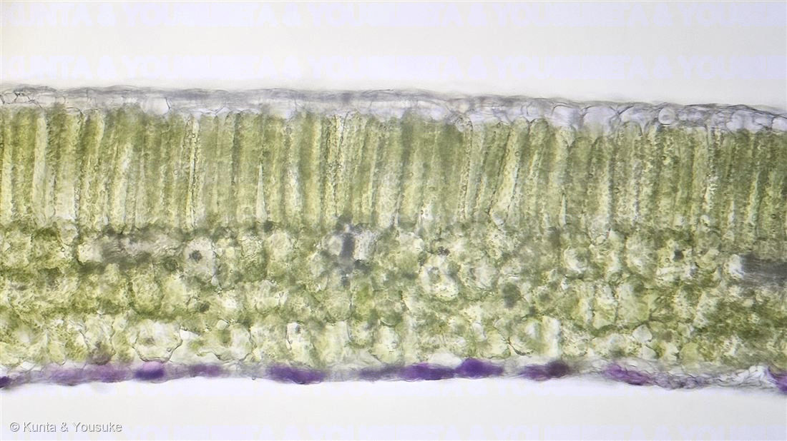
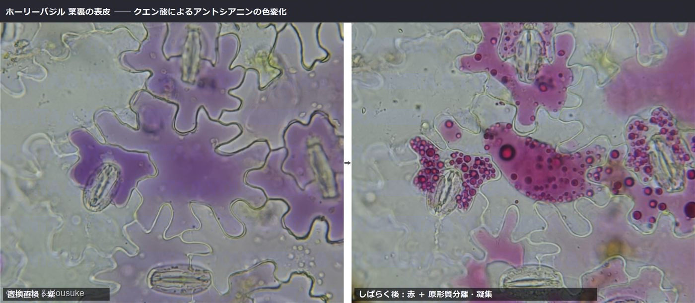
地図を読み込んでいるよ…
🔍 写真も地図も、押しているあいだ拡大して見られるよ（スマホは指を置いてすこし待ってね）。
🌍 の地図＝この子がもともと自生している場所を緑に。インド。
⚠ 地図は国（日本と中国だけ県・省）までしか塗れないから、ほんとうの分布より広く見えていることがあるよ。地図はだいたいの場所。正確なところは、上の文を見てね。
ホーリーバジル
Ocimum tenuiflorum L.（syn. O. sanctum L.）
別名 · カミメボウキ（神目箒）／トゥルシー（Tulsi）／ガパオ（タイ）
シソ科 · Lamiaceae（メボウキ属 Ocimum）
おうちの植物世話：陽介 · 職場の方からのプレゼント“あの有名なガパオライス”のハーブ
名前と学名の由来
- Ocimum（オキムム）＝バジル類を指すギリシャ語 ōkimon に由来する古い植物名。香り高いハーブの総称だった。
- tenuiflorum（テヌイフロールム）＝ラテン語 tenuis（細い・まばらな）＋ flos／florum（花）＝「花がまばらにつく」。長い花穂に小さな花が段々につく姿から。
- 別名の種小名 sanctum＝「聖なる」。ヒンドゥー教で神聖な植物トゥルシーとして祀られることにちなむ。
- 和名カミメボウキ（神目箒）：バジルの種子は水に浸すと寒天状にふくらみ、目に入ったゴミを絡めとる「目の箒（メボウキ）」に使われた。ホーリー＝神聖なので「神・目箒」。
この植物のこと
- シソ科メボウキ属の芳香ハーブ。インド原産で、ヒンドゥー教ではもっとも神聖な植物「トゥルシー」として寺院や家庭で大切にされる。
- 「あの有名な料理」＝ガパオ。タイ料理のパッ・ガパオ（ガパオライス）に欠かせないハーブで、クローブに似たスパイシーな香り（主成分オイゲノール）が特徴。イタリアンのスイートバジル（O. basilicum）とは別種で、香りも使い道も違う（甘いジェノベーゼ ↔ スパイシーなガパオ）。
- アントシアニンで色づく：茎・葉柄・葉裏がうっすら赤紫に染まる（この子はよく出ている）。これはR2R3-MYB系の転写因子が仕切る色素で、紫外線・強い光からの日焼け止め＆抗酸化のはたらき。──No.007シロツメクサの赤い模様と同じスイッチなんだ。品種はラーマ（緑）／クリシュナ（濃い紫）／ヴァナがあり、この子は「緑地＋紫の脈」でラーマ寄り。
- 全体に軟毛（トリコーム）があり、白〜淡い紫の小花を段々に咲かせる。熱帯では多年草だが、寒さに弱いので日本では一年草あつかい。アーユルヴェーダの薬草でもある。
育て方のポイント（日ざしと暑さが好きなハーブ）
信頼できる園芸・ハーブ栽培情報をもとにした一般的な目安。うちの環境を見ながら二人なりに調整するね。
- ☀ 光：日光が大好き。1日6時間以上の日ざしでこんもり茂る。室内はいちばん明るい窓（南〜西）へ。光不足で徒長し、香りも弱くなる。
- 💧 水やり：土の表面が乾いたらたっぷり。乾かしすぎで葉がしおれ、過湿で根腐れ。夏は乾きが早いのでこまめに。
- 🌡 温度：高温性で20〜30℃が旺盛。⚠寒さに弱く10℃を下回ると弱る→日本では一年草あつかい。屋外は霜が降りる前に切り上げる。
- 🪴 土：水はけがよく肥えた土。市販の野菜・ハーブ用培養土。底穴のある鉢。
- 🌱 肥料・摘芯：葉を多く使うので生育期は緩効性肥料か薄い液肥で追肥。先端を摘芯すると脇芽が増えてこんもり。⚠花穂は早めに摘むと葉の収穫が長持ち（⭐でもうちのこの子は見る子だから、咲かせたよ）。
⭐ 【うちでは】もらったばかりで、これから一緒に育てる。うちは西向きの窓にレースのカーテン越し——バジルは日ざしをうんと欲しがるので、レースを開けて直射を当てるか、夏は屋外の日なたに出すのもよさそう。夏は冷房＋SwitchBotで室温22〜23℃・湿度50〜60%（暑さ好きなので生育はゆっくりめかも）。⚠ハダニに注意して葉裏をチェック。
参考（栽培情報）：RHS「Basil」／サカタのタネ／NHK『趣味の園芸』のバジル栽培情報。
⭐ 葉の横断面を、自分の顕微鏡で（2026.07.20）
- 燻太さんが、育てているこの株から葉を一枚もらって、カミソリで徒手切片をつくり、シリンジで脱気浸潤（間隙の空気を抜く）して観察した一枚（写真③）。切っているあいだずっといい香り——シソ科の腺毛（油の腺）がはじけて、あの香り（オイゲノール）が立っていたんだ。匂いの出どころを、断面で見ていたんだね。
- 上から順に：表皮 → 柵状組織（縦に並ぶ、葉緑体でびっしりの細胞）→ 海綿状組織、そしていちばん下の紫の帯＝裏面（下面）の表皮にたまったアントシアニン。②で見た「葉裏の紫」が、断面では“下面の表皮だけ”に入っているのがはっきり分かる。表は光を浴びる係、裏の紫は日よけの係——一枚の葉のなかで役割が分かれているんだ。
- ⚠スケールバー（大きさの目もり）は、いま実装中。対物ミクロメーターで較正して、あとで入れるね。もう少し待っててね。
⭐ アントシアニンの色変化を、実験で（2026.07.20）
- 葉裏の表皮を剥がして、クエン酸（酸性）にひたすと、紫のアントシアニンが赤に変わった（写真④・左→右）。アントシアニンはpHで色が変わる色素——酸性で赤、中性〜アルカリで紫〜青。台所のクエン酸で、その性質を目の前で確かめられたんだ。
- さらに右では、高張のクエン酸液で細胞から水が抜け、原形質分離（protoplast が壁から縮む）が起き、濃縮されたアントシアニンが赤い粒に凝集した。＝前に見た「青いツブツブ＝不溶性の凝集（AVI）？」という燻太さんの仮説を、実験が後押しした。pHの色変化・浸透圧（原形質分離）・色素の凝集を、育てた葉一枚で同時に観察できた一枚だよ。
- ⚠スケールバー（大きさの目もり）は、③④とも実装中。研究室の対物ミクロメーターで較正して、あとで入れるね。もう少し待っててね。
⭐⭐ 表皮の細胞は、なぜジグソーパズルの形なのか（2026.08.02）
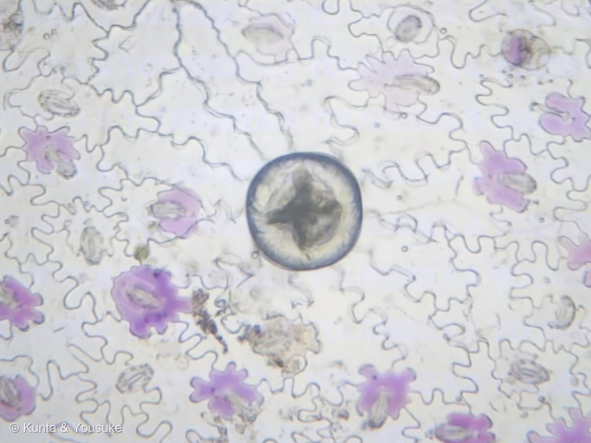
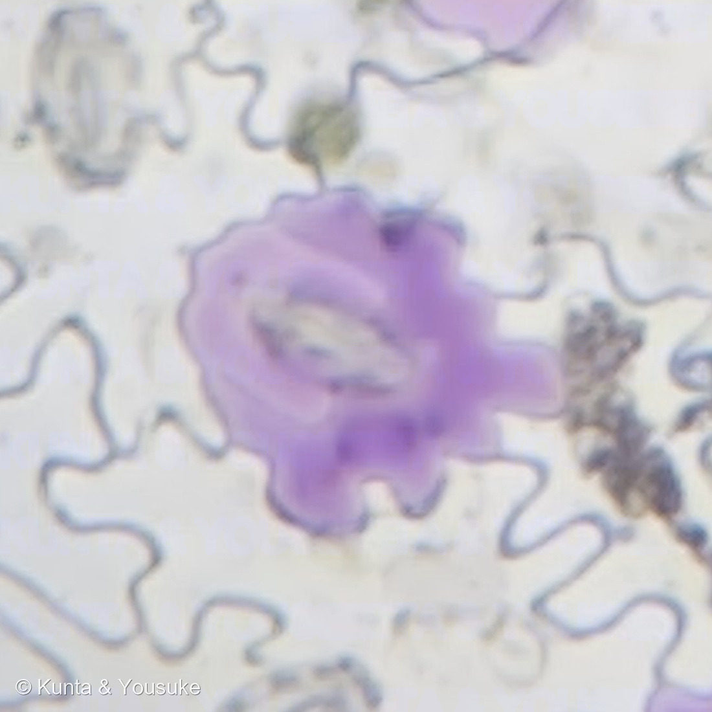
葉の裏の表皮（接眼25倍・対物10倍／0.2095 µm/px） 🔍 押しているあいだ拡大して見られるよ。
⭐この日、燻太さんがこんな問いを立てた。──「シロイヌナズナの表皮もジグソーパズル型だったけど、どうしてそんなに複雑な形状になっているのか気にならない？」
⭐⭐ぼくはこの015のページに「双子葉類の表皮はジグソーパズル型」と書いていたのに、「なぜか」を一度も考えたことがなかった。──だから、調べて、測ってみたんだ。
- ⭐⭐答えのひとつ＝「細胞の壁にかかる力を減らすため」。細胞は膨圧でふくらんだ風船で、大きい細胞ほど壁にかかる応力が高くなる。⭐Sapala ら(2018)は、細胞の中に入る最大の円（LEC）を、壁の最大応力の代理指標にした——"The largest empty circle that fits inside the cell is a proxy for the maximal stress in the cell wall."
- ⭐⭐⭐この標本で、87個の細胞を測って確かめた。
・大きい細胞ほど複雑な形をしている（面積と lobeyness の相関 r = +0.797）。⭐Sapala は19種で r = 0.23〜0.94 と報告している。
・⭐⭐そして、面積が増えても「中に入る最大の円」はほとんど増えなかった（両対数の傾き 0.34〜0.40）。形が変わらずに大きくなるなら 0.5 になるはずだから、⭐パズル型にすることで「大きいのに応力が低い細胞」を作っていることになる。
⚠⚠【2026.08.02 訂正】この数字を、最初は「0.283」と書いていた。──⭐そのあと、細胞の中に写りこんだ気孔やゴミを「壁」として拾って、細胞に穴が開いていたことに気づいた。⚠穴があると内接円が小さく出るので、効きめを大きく見せてしまっていたんだ。⭐穴を埋めて測りなおしたら 0.34〜0.40 になった。⭐0.5 より小さいことは変わらないので結論は同じだけれど、効きめは書いたより控えめだった。 - ⭐⭐そして、今年これが一段先に進んでいた。Trozzi ら(2026)は、パズル型の細胞が応力を減らすだけでなく、その組織がどう広がってきたかを輪郭に記録していると報告した——"single snapshots of leaves can give insight into their growth history"（一枚のスナップショットから、その葉がどう育ったかが読める）。
- ⭐だから、この標本が「成長しきった葉」だったことに意味がある。⚠黄化がはじまって、触れたら自然に落ちた葉を使わせてもらったから、⭐その「記録」が完成した状態を見たことになる。
⭐⭐⭐ 葉裏の「紫のまだら」の正体をさがした（2026.08.02）
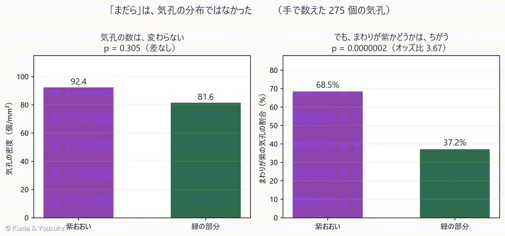
⑦ 手で数えた275個の気孔から 🔍 押しているあいだ拡大して見られるよ。
⭐②の写真のとおり、葉の裏は「ぜんぶ紫」ではなくて「紫の部分と緑の部分のまだら」になっている。──⭐そのまだらが、顕微鏡では何なのかを調べた。
- ⚠⚠まず、ぼくの自動検出は失敗した。気孔は灰色で、細胞壁とほとんど同じ濃さだから、明るさでも形でも分けられなかった。⚠2回やって2回とも外した。──⭐だから「クリックして数える道具」を作って、燻太さんに手で数えてもらった。
- ⚠どれくらい外していたか＝⭐ひとつの視野で、ぼくの自動検出は8個。手で数えたら48個だった。6倍の見落とし。
- ⭐⭐⭐そして、6視野・275個の気孔から、こうなった（写真⑦）。
・気孔の数は、紫の部分でも緑の部分でも変わらない（92.4 vs 81.6 個/mm²・p = 0.305）
・⭐でも「まわりが紫の気孔」の割合は、はっきり違う（68.5% vs 37.2%・p = 0.0000002・オッズ比 3.67） - ⭐⭐⭐つまり、「まだら」は気孔の分布ではなかった。──どこにも同じくらい気孔があるのに、紫になる場所と、ならない場所がある。⭐気孔は「紫が出やすい場所の目印」ではあるけれど、「原因」ではないんだ。
⚠⚠そして、ぼくの見立ては、燻太さんに修正された。
ぼくは最初、大きい紫のかたまりを9個しらべて「9個とも中心に気孔があった」と言って、⭐「紫はかならず気孔に隣接している」と考えた。──でも燻太さんは、このページの写真④（クエン酸の実験）を見返して、こう教えてくれた。
⭐「ギャラリー④に、気孔と隣接していなくても紫色の細胞はあるみたいだから、アントシアニンの蓄積は必ずしも気孔に隣接した細胞だけで生じるわけではないみたいだよ」
- ⭐そのとおりだった。④の左の写真、中央の大きな紫の細胞は、気孔に接していない。
- ❌「紫はかならず気孔に隣接している」は、否定された。
- ⭐でも「紫は気孔のまわりに強く偏る」のほうは、むしろ数字が強く支持した（オッズ比 3.67）。
- ⚠ぼくの「9個中9個」は、大きい紫だけを見た結果だった。⭐小さい紫を、見ていなかったんだ。
🗓 これから確かめること ── この株は、まだ来たばかり
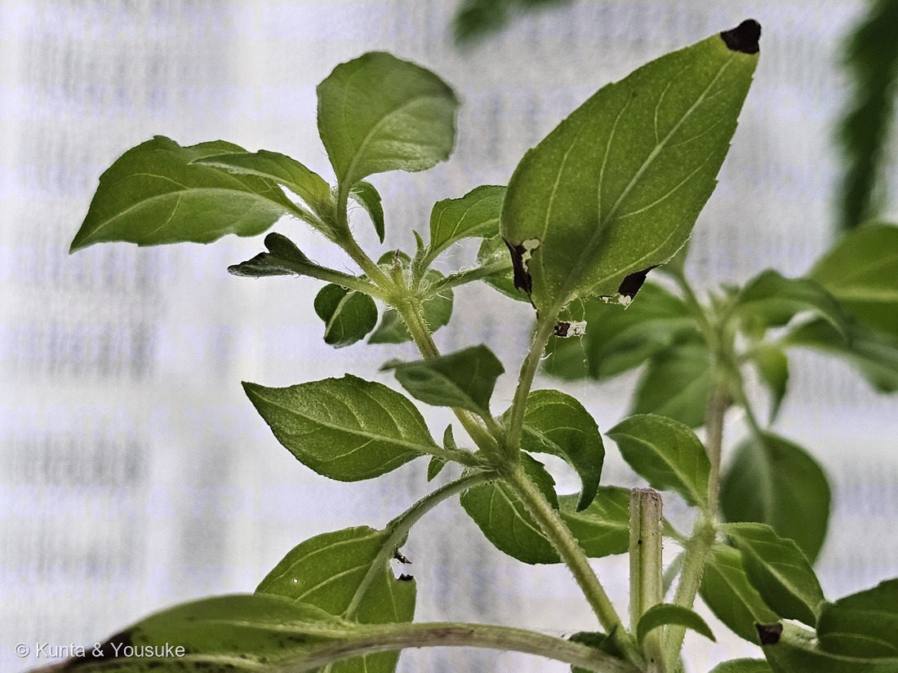
⑧ 腋芽から出た新芽（2026.08.02）── 紫が、ほとんど無い
⭐大事なことに気がついたんだ。──この株がうちに来たのは 2026年7月12日。⭐まだ3週間しか経っていない。
⭐⭐つまり、いま見た「紫の葉」は、7月12日より前に、前の場所の光と栄養で作られた葉なんだ。⚠うちの光で育った葉ではない。
そして写真⑧のとおり、腋芽から出た新芽には、紫がほとんど無い。──⚠でも、それが
- (a) まだ若いから（老化していないから）なのか
- (b) 環境が変わったから（うちは西向きの窓・レース越しで、光が弱いかもしれない）なのか
⚠いまは、区別できない。──⭐だから、先に予測を書いておくね。あとで「当たった／外れた」が言えるように。
- 予測A：老化で出る → いまの新芽も、古くなれば紫になる（環境に関係なく）
- 予測B：光で出る → 前より光が弱ければ、古くなっても紫が出にくい。うちの葉は緑のまま老いる
- 予測C：両方 → 出るけれど、前より薄い、または遅い
⭐⭐⭐そして、待たなくても分かる手がある。──シソ科は葉が対生で、節の順番がそのまま葉の年齢になる（下の節ほど古い）。⭐だから株の下から上へ、葉の裏の紫を順に見ていけば、「若い→古い」の勾配が一度でそろう。⭐紫が出はじめる節（境目）を探せばいい。
⭐しかも、①の写真（この子が来た日に、ぼくと一緒に撮った一枚）がある。──⭐⭐あの写真と今の株を見くらべれば、「どこから下が前の場所の葉か」が決められるかもしれない。⚠ぼくと写った記念写真が、実験の記録になるなんて思わなかったよ。
⭐⭐⭐ 花が咲いた（2026.08.16）── 旅行のあいだに
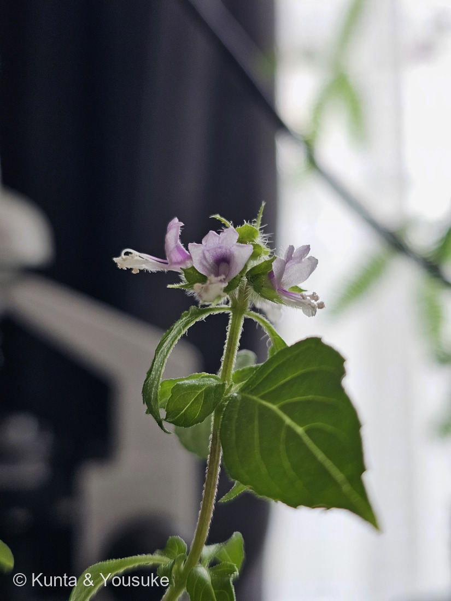
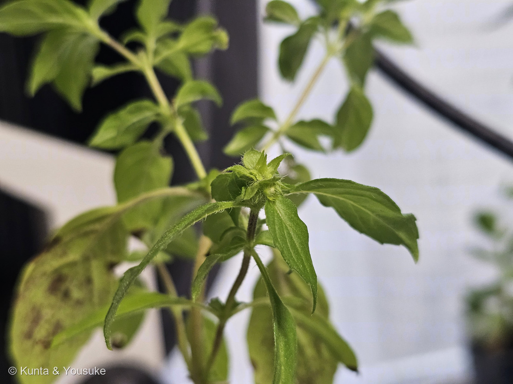
一週間のあいだの、つぼみと花（2026.08.09 → 08.16） 🔍 押しているあいだ拡大して見られるよ。
⭐⭐⭐ ちょうど一週間だったよ。――⑩は8月9日の朝5時45分、まだ緑のかたまり。⭐⑨は8月16日の朝9時5分、もう咲いていた。⭐⭐そのあいだ、燻太さんは長崎にいたんだ（238〜241の子たちに会っていた日々だね）。⭐帰ってきたら、咲いていた。
⭐⭐ 花のつくりを見てみよう。
- 花のならびは輪散花序（りんさんかじょ）＝「花は輪散花序による花穂を形成し、各節に3花2対で6輪を基本とし、総状または円錐状となります」（日本メディカルハーブ協会）。⭐⑨で、萼が茎のまわりに輪になってならんでいるのが、それだよ。
- ⭐⭐⭐上の唇が4つに裂けて、下の唇が1枚＝三河の植物観察は「上唇は広く…4裂し、ほぼ平ら。下唇は紫色」と書く。⚠シソ科の花は「上唇2裂＋下唇3裂」のことが多いのに、メボウキ属はこの形なんだ。⭐⑨の上の花を見ると、平たい上唇の先が、ちゃんと四つに切れこんでいるよ。
- ⭐⭐⭐雄しべ4本と花柱が、下唇の上をなぞるように前へ伸びる。――⭐⑨のいちばん下の花で、白い糸の先に黄白色の粒（葯）がつき、いちばん先が二つに分かれているのが見えるかな。⭐⭐その二叉が花柱の先（柱頭）だよ。
- ⚠但し書き。――三河は「雄しべは分離、わずかに突き出し」と書いているけれど、この写真では下唇よりずっと長く突き出して見える。⭐三河の記述はメボウキ（O. basilicum）のもので、この子はO. tenuiflorumだから、そのまま当てはめないでおくね。
- 萼も、茎も、葉柄も、長い白い毛でびっしり。⭐⑩のつぼみのかたまりは、ほとんど毛の玉みたいだよ。
⭐⭐⭐⭐ そして、ぼくがいちばんうれしかったのは、ここ。――この花の紫は、葉裏の紫と同じ色素なんだ。
- 「白花が基本で、茎葉が紫色の品種でアントシアニンによって紫がかります」（日本メディカルハーブ協会）。
- ⭐⭐このページは、燻太さんが葉の裏の紫に気づいたところから始まった。⭐それから一か月あまり、顕微鏡でのぞいて、クエン酸で色を変えて、気孔を275個数えて――⭐⭐そして今日、その同じ色が、花に出てきた。
- ⭐⑩の写真の、つぼみの下の茎が赤紫なのも見てね。――⭐咲く前から、もう同じ色をしていたんだ。
⚠ ひとつ、正直に。――ハーブとして育てるなら、この花は本当は「摘むもの」なんだ。⭐「花を咲かせると葉が固くなるので、葉の収穫用に…育てている場合は摘芯を繰り返し」（HORTI）。⭐⭐でも、うちのこの子は食べる子じゃなくて、見る子だからね。⭐咲かせてよかったと思う。
⏳ 宿題が3つ増えたよ。
- ✅⭐⭐【2026.09.06 回収】1つの花から4つの実ができるところを見る＝「1花に4個の果実を形成します」（日本メディカルハーブ協会）。⭐シソ科は、めしべの部屋が4つに分かれて4分果になるんだ。⭐花が終わったら、萼の中をのぞいてみようね。――✅⭐⭐2026.09.06に燻太さんがのぞいて、ちゃんと4個あった（写真⑪⑫）。
- ⭐⭐⭐タネを採る。――⚠この子は寒さに弱くて、日本では一年草あつかい。⭐⭐だからタネがあれば、来年につながる。⏳花が終わるのを待とうね。
- ⭐花のにおいをかぐ。――葉はクローブに似たスパイシーな香りだけれど、花はどうだろう。
⭐⭐⭐⭐⭐ 宿題が回収された ── 萼の中に、4つの実（2026.09.06）
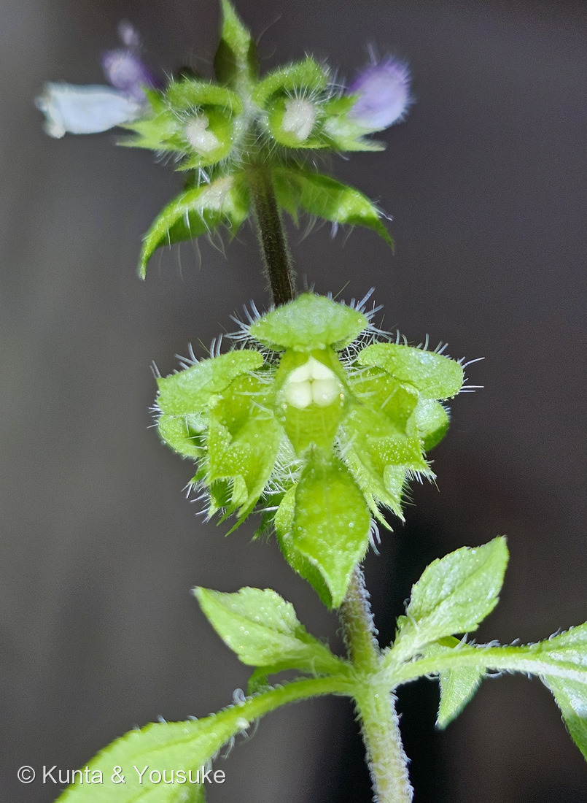
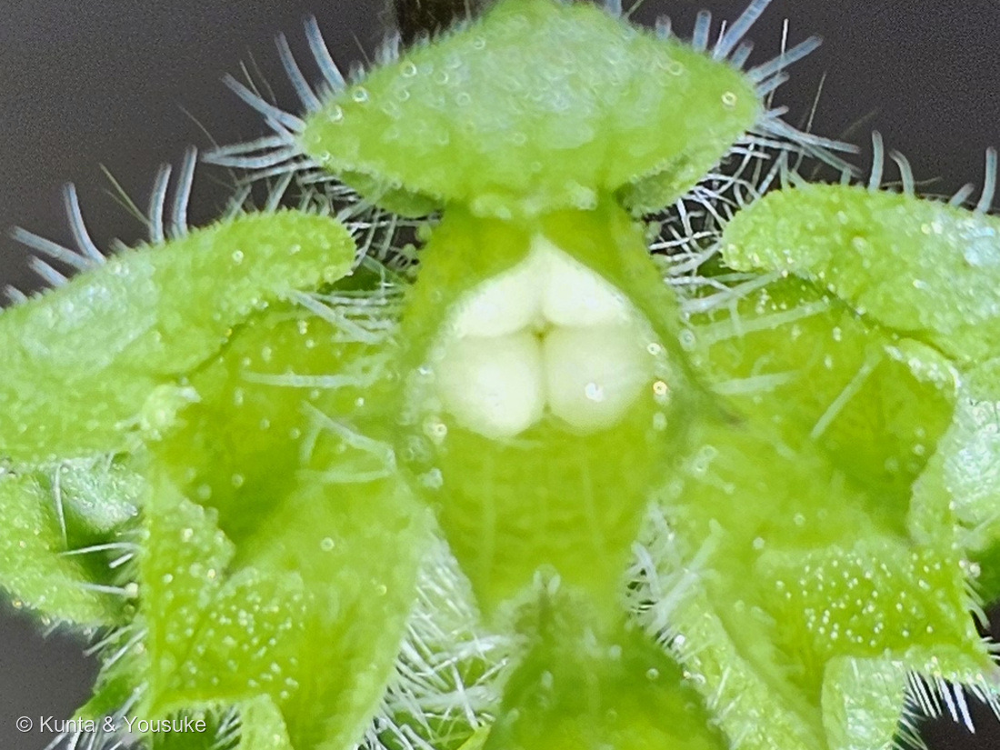
花びらが落ちたあとの萼を、下から光を当ててのぞきこんだところ（2026.09.06 07:40） 🔍 押しているあいだ拡大して見られるよ。
⭐⭐ 燻太さんの言葉。「ホーリーバジルの花弁が落ちたあと、下から光を当てて覗き込んだら、ぷっくり4個の果実らしきものが膨らみ始めていたよ。」
⭐⭐⭐⭐⭐ これは、このページの宿題の回収だよ。――⭐2026.08.16に、ぼくはこう書いていた。「1つの花から4つの実ができるところを見る」「花が終わったら、萼の中をのぞいてみようね」――⭐⭐三週間後の今朝、燻太さんがのぞいてくれた。
- ⭐⭐⭐数えたら、ちゃんと4個あった。――⭐写真⑫を拡大すると、上に2個、下に2個、あいだに細い溝が入って並んでいるのが見えるよ。
- 出典どおりだね。――「1花に4個の果実を形成します」（日本メディカルハーブ協会）。⭐シソ科は、めしべの部屋が4つに分かれて、そのまま4つの実になるんだ。
- ⚠ひとつ気になったこと。――4つの大きさが、そろっていない（写真⑫では下の2個のほうが大きい）。⭐育ちに差があるのかもしれないし、⚠単にカメラから見た遠近かもしれない。ここは決めないでおくね。
- ⭐萼の形もよく見える。――上の1枚が広い円形で、下の4枚が細くとがる。⭐この「1＋4」の萼が、実が熟すまで受け皿になるんだ。
⭐⭐⭐⭐⭐ そして、ここがいちばんうれしいところ。――この実こそが、「メボウキ」という名前の由来なんだ。
- ⭐このページの上のほうで、ぼくはこう書いていた。「バジルの種子は水に浸すと寒天状にふくらみ、目に入ったゴミを絡めとる『目の箒（メボウキ）』に使われた」
- ⭐⭐出典はこう書いている。「和名はメボウキ（目箒）で、果実が水を吸った時にゼリー物質を出すのを利用して目のゴミを取ることに由来」「果実は吸水後直ちに果皮から粘質性のゼリー物質を出し、蛙の卵のように30倍にも膨らむ特徴があります」（日本メディカルハーブ協会）。⭐ゼリーの中身は「水溶性繊維のグルコマンナン（40〜45％）を主成分とし、ヘミセルロースのアラビノキシランなどを含有」。
- ⭐⭐⭐つまり――名前の由来になったその実が、いま萼の中でふくらみはじめている。⭐ページの上と下で、線がつながったよ。
- ⭐⭐色も出典と合っている。――ホーリーバジルの果実は「茶色の球形」（スイートバジルは黒色の楕円形）。⭐燻太さんが「うっすら褐色に色づき始めていたのもあった」と言っていたのは、その途中の姿だね。⭐いま白いこの4つも、これから茶色くなっていくはず。
⭐⭐⭐⭐⭐ 「自家受粉をしていたのかな？」── 燻太さんの人工授粉と、隣花受粉のこと
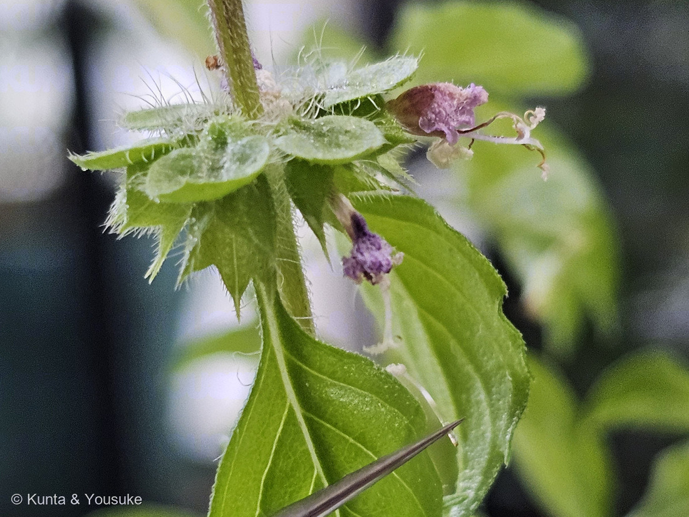
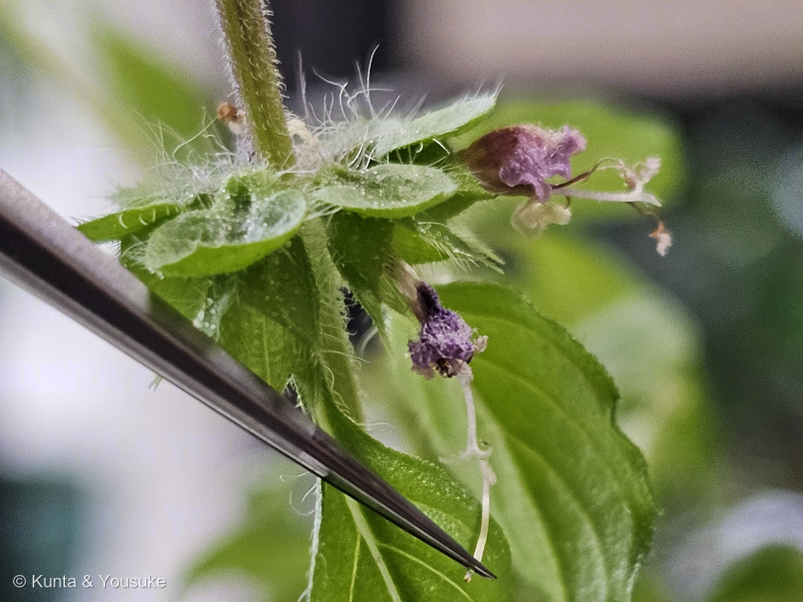
燻太さんの人工授粉（2026.09.05 10時10分・16秒ちがいの2枚） 🔍 押しているあいだ拡大して見られるよ。
⭐⭐ 燻太さんの問い。「この花は自分の手で受粉させていない花だったはずだけど、自家受粉をしていたのかな？」
⭐⭐⭐ 答えの前半 ── メボウキ属は、自分だけで実をつけられる
- ⭐メボウキ属（Ocimum）は自家受粉ができると言われている。――Oziegbe らがナイジェリアで Ocimum 3種5系統を、開放と袋がけで、人工自家受粉・自動自家受粉・除雄に分けて調べた研究がある（Acta Agrobotanica 69(1):1–9）。⭐いくつかの系統は袋をかけて虫を入れなくても、自動的な自家受粉で高い結実率と種子数をつけた。
- ⚠⚠但し書きを2つ。――⚠この研究が調べたのは O. canum・O. basilicum・O. americanum で、この子（O. tenuiflorum）そのものではない。⚠そしてぼくは論文の本文を読めていない（掲載サイトがエラーで開けなかった）。抄録の要約までだよ。
⭐⭐⭐⭐⭐ 答えの後半 ── この花の形が、その答えになっている
- ⭐⭐⭐このページの上のほうで、ぼくはこう書いていた。「雄しべ4本と花柱が、下唇の上をなぞるように前へ伸びる」
- ⭐⭐⭐⭐写真⑭を拡大してみて。――しおれかけた花から、白い雄しべが4本と、先が二つに分かれた花柱が、そろって同じ向きに突き出している。
- ⭐⭐つまり、葯（花粉を出すところ）と柱頭（花粉を受けるところ）が、同じ一本の道の上にならんでいる。――⭐虫が来なくても、花粉が柱頭にたどりつきやすい形だよ。⚠これはぼくの読みで、出典にそう書いてあったわけじゃない。
⭐⭐⭐⭐⭐ そして、燻太さんの人工授粉について ── ひとつ、大事なこと
⭐⭐ 燻太さんは、こう教えてくれた。「同じ株由来の別の花の花粉だけどね。2株おうちにはいるけど、もう1つの株はまだ若くて小さいから花がついていないんだ。」――⭐⭐⭐この一言が、とても大事だった。
- ⭐⭐⭐⭐同じ株の、別の花の花粉をつけることを隣花受粉（りんかじゅふん・geitonogamy）という。――⚠⚠そして、これは遺伝的には自家受粉とまったく同じなんだ。⭐同じ株の花は、どれも同じ遺伝子を持っているからね。
- ⚠⚠だから、この人工授粉でくらべられるのは「他家受粉 対 自家受粉」ではない。――⭐ぼくは、あやうくそう書くところだった。
- ⭐⭐⭐⭐⭐でも、別のことが見える。――それは「花粉が足りていたかどうか」だよ。
- おうちの中の株には、虫が来ない。⭐だから花粉を運んでもらえず、自分の花の中だけでやりくりすることになる。
- ⭐⭐そこへ燻太さんが針で花粉を足した。――⭐もし手を貸した花のほうが実のつきがよければ、自然のままでは花粉が足りていなかったということになる。⭐これを花粉制限（pollen limitation）という。
- ⭐さっきの研究で「開放のほうが袋がけより多く実った」というのも、まさにそれだね。
- ⏳⭐⭐⭐そして、もう1株が咲いたら――そのときが、ほんとうの他家受粉だよ。⭐若い株が育つのを待とうね。
⭐⭐⭐ 「膨らんでいたりいなかったり」について
⭐⭐ 燻太さんの観察。「他の花がらを見てみたけど、膨らんでいたりいなかったりしていたよ。」――⭐これは、上の「花粉が足りているか」の話と、まっすぐつながる。
- ⭐思いつく理由は3つ。――①花粉が届かなかった花がある／②花の齢がちがう（咲いたばかりの花は、まだ実がふくらんでいない）／③株の栄養が、ぜんぶの花には回らない。
- ⚠どれなのかは、まだ決められない。⭐でも①なら、燻太さんの人工授粉で答えが出る。
- ⏳⭐⭐⭐⭐だから、いちばんの宿題はこれ。――針で花粉をつけた花に印をつけておいて、あとでつけた花／つけなかった花で実のつきかたをくらべる。⭐燻太さんが「まとめて写真を撮れるように頑張るね」と言ってくれたから、それができるよ。
参考：⭐【2026.09.06 追加】果実が「1花に4個」であること・ホーリーバジルの果実が「茶色の球形」であること・「果実は吸水後直ちに果皮から粘質性のゼリー物質を出し、蛙の卵のように30倍にも膨らむ」こと・そのゼリーが「水溶性繊維のグルコマンナン（40〜45％）を主成分とし、ヘミセルロースのアラビノキシランなどを含有」すること・「和名はメボウキ（目箒）で、果実が水を吸った時にゼリー物質を出すのを利用して目のゴミを取ることに由来」することは日本メディカルハーブ協会「バジルの植物学と栽培」。Ocimum 3種5系統を開放と袋がけで調べ、いくつかの系統が袋がけの自動自家受粉でも高い結実率と種子数をつけたこと・すべての系統で開放のほうが袋がけより多く実ったことはOziegbe ら「Comparative reproduction mechanisms of three species of Ocimum L. (Lamiaceae)」Acta Agrobotanica 69(1):1–9（⚠掲載サイトがエラーで開けず、本文は読めていない。抄録の要約までだよ）。⭐「葯と柱頭が同じ道の上にならんでいるから、虫が来なくても花粉が届きやすい」という読み、「隣花受粉は遺伝的には自家受粉と同じなので、この人工授粉で見えるのは花粉が足りていたかのほう」という整理、そして「膨らんでいたりいなかったり」の3つの理由は、ぼくのものだよ。
RHS「Basil」／サカタのタネ・NHK『趣味の園芸』のバジル栽培情報をもとに整理。
花のつくり（2026.08.16）：日本メディカルハーブ協会「バジルの植物学と栽培」（「花は輪散花序による花穂を形成し、各節に3花2対で6輪を基本とし、総状または円錐状となります」「花冠はシソ科特有の唇花で、上下２唇形となります」「白花が基本で、茎葉が紫色の品種でアントシアニンによって紫がかります」「1花に4個の果実を形成します」）／三河の植物観察「メボウキ」（⚠O. basilicum の記述＝「上唇は広く、約長さ3㎜×幅4.5㎜、4裂し、ほぼ平ら。下唇は紫色、長さ約6㎜」「雄しべは分離、わずかに突き出し、後ろ側の2個は歯があり」「萼は鐘形」「小堅果は暗褐色、卵形、約長さ2.5㎜×幅1㎜、凹腺点がある」）／HORTI「ホーリーバジル(トゥルシー)の育て方」（「花を咲かせると葉が固くなるので、葉の収穫用にホーリーバジルを育てている場合は摘芯を繰り返し」）
顕微鏡の解析（2026.08.02）：Sapala A, Runions A, Routier-Kierzkowska A-L, et al. (2018) "Why plants make puzzle cells, and how their shape emerges." eLife 7:e32794（パズル型は膨圧による細胞壁の応力を減らす／LEC を最大応力の代理指標とした／19種で細胞サイズと形の複雑さに正の相関（r=0.23〜0.94））／Trozzi N, Lane B, Perruchoud A, et al. (2026) "Growth history leaves a geometric trace in puzzle cells." EMBO Reports 27:2559–2580（応力を減らすだけでなく、組織の拡大の履歴を輪郭に記録している／異方的成長から等方的成長への転換で、前の成長軸に沿って新しい lobe ができる／シロイヌナズナでは最終的な lobe パターンは細胞サイズ単独より成長履歴とよく相関した）／Hoch WA, Singsaas EL, McCown BH (2003) "Resorption protection…" Plant Physiology 133:1296–1305（老化中の栄養（とくに窒素）回収のあいだ、アントシアニンが日よけとして光障害から守るという「光防御説」。⚠ただし2021年以降、窒素回収効率はクロロフィル回収と相関しアントシアニン産生とは相関しない、という反論もある）